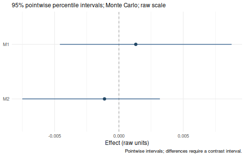

Use the Get started examples for a first analysis. This guide shows which arguments to add when your question needs a different model, covariates, missing-data handling or inference method.
Start with the defaults
data(example_data)
result <- wsMed(
data = example_data,
M_C1 = c("A1", "B1"),
M_C2 = c("A2", "B2"),
Y_C1 = "D1",
Y_C2 = "D2"
)
print(result)
#> wsMed analysis
#> Model: P | DE | Observations: 100
#> Effects:
#> wsMed all | raw scale | mc
#> 95% percentile intervals; 20000 joint draws; SE from effect draws
#> Condition contrast: C2 - C1
#> Estimate Std. Error CI lower CI upper
#> cp: Direct effect -0.031795 0.017000 -0.064525 0.001864
#> indirect_1: M1 0.001311 0.003208 -0.004601 0.008917
#> indirect_2: M2 -0.001120 0.002570 -0.007617 0.003084
#> total_indirect: Total indirect effect 0.000191 0.004111 -0.008172 0.008783
#> total: Total effect -0.031604 0.017015 -0.064740 0.001839
#> Inference draws: 20000 retained of 20000 ; 0 excluded before effect extraction.
#> Use as.data.frame() for the full-precision table and metadata.
#> Post-fit admissibility: 1 of 1 ; excluded rows: 0The default is parallel mediation with Monte Carlo inference, 20,000 draws, 95% CIs and unstandardized output. Listwise deletion is the default missing-data strategy; the example data are complete. Later calls keep these defaults unless an argument is explicitly changed.
Paired variables
Each row represents one participant. Match each mediator’s condition
1 and condition 2 measurements by position in M_C1 and
M_C2. Y_C1 and Y_C2 identify the
outcome pair. Differences are always condition 2 minus condition
1.
| Construct | Condition 1 | Condition 2 | Role |
|---|---|---|---|
| A | A1 |
A2 |
First mediator (M1) |
| B | B1 |
B2 |
Second mediator (M2) |
| D | D1 |
D2 |
Outcome (Y) |
Outcomes, mediators and within-subject covariates are analyzed as continuous numeric variables. Binary and multicategory variables can be between-subject covariates or moderators; use unordered factors with explicit levels. See categorical predictors.
Choose the mediator structure
Predefined models
form |
Structure |
|---|---|
"P" (default) |
Parallel mediation |
"CN" |
Serial mediation; each mediator predicts every later mediator |
"CP" |
Serial-parallel mediation; M1 predicts the remaining mediators |
"PC" |
Parallel-serial mediation; the remaining mediators predict M1 |
The diagrams show the four predefined structures. Each includes condition effects on every mediator and the outcome, and paths from every mediator to the outcome. The connections among mediators distinguish the models.


Click a diagram to enlarge it. In these difference-score diagrams,
diff denotes condition 2 minus condition 1 and
avg denotes the centered average; the triangle represents
the constant used to estimate condition effects.
For example, change only form to fit a serial model:
serial <- wsMed(
data = example_data,
M_C1 = c("A1", "B1"),
M_C2 = c("A2", "B2"),
Y_C1 = "D1",
Y_C2 = "D2",
form = "CN"
)
print(serial)Choose mediator order from the research design. The model articles show the parallel, serial, serial-parallel and parallel-serial equations and diagrams.
User-defined models
Use form = "UD" when you want to specify the mediator
connections yourself. Mediator labels follow the order in
M_C1 and M_C2: in the call below,
M1 is A, M2 is B, and M3 is C.
Y is the outcome pair D1/D2. In paths, write
one arrow per string using these labels:
custom_paths <- c(
"M1 -> M3", # A predicts C
"M3 -> Y", # C predicts the outcome
"M2 -> Y" # B predicts the outcome
)Pass this vector to wsMed(); all other settings keep
their defaults:
custom <- wsMed(
data = example_data,
M_C1 = c("A1", "B1", "C1"),
M_C2 = c("A2", "B2", "C2"),
Y_C1 = "D1",
Y_C2 = "D2",
form = "UD",
paths = custom_paths
)
print(custom)
#> wsMed analysis
#> Model: UD | DE | Observations: 100
#> Effects:
#> wsMed all | raw scale | mc
#> 95% percentile intervals; 20000 joint draws; SE from effect draws
#> Condition contrast: C2 - C1
#> Estimate Std. Error CI lower CI upper
#> cp: Direct effect -3.00e-02 1.68e-02 -6.31e-02 2.90e-03
#> indirect_1_3: M1 -> M3 -2.25e-05 3.63e-04 -8.44e-04 7.36e-04
#> indirect_2: M2 -1.40e-03 2.75e-03 -8.43e-03 2.98e-03
#> indirect_3: M3 -1.85e-04 2.17e-03 -5.11e-03 4.38e-03
#> total_indirect: Total indirect effect -1.60e-03 3.55e-03 -9.76e-03 4.94e-03
#> total: Total effect -3.16e-02 1.69e-02 -6.48e-02 1.55e-03
#> Inference draws: 20000 retained of 20000 ; 0 excluded before effect extraction.
#> Use as.data.frame() for the full-precision table and metadata.
#> Post-fit admissibility: 1 of 1 ; excluded rows: 0Only the specified mediator connections are fitted. For example,
M1 -> Y is absent here; add that string to
custom_paths if the model should include it. Paths from the
condition to every mediator and the direct condition-to-outcome path are
added automatically, so do not include X in
paths.
The arrows must not form a cycle, and at least one must end at
Y. The worked UD
example explains these rules and shows how the specified arrows
determine the indirect effects.
To add moderation, keep custom_paths and add
W = "D3" and MP = c("b_1_3", "b3"). This
selects the M1-to-M3 and M3-to-outcome slopes for moderation by D3.
Unlike paths, MP takes coefficient labels, not
arrow strings. See the UD moderation
example for the full call, path-label choices, and conditional
results.
Add optional model components
Covariates
Use C_C1 and C_C2 for paired within-subject
covariates and C for between-subject covariates. Their
measurements remain in the same wide dataset:
Moderators
Use W for the moderator column and MP for
the paths to moderate. In the parallel model, b1 and
b2 are the mediator-to-outcome difference slopes:
moderated <- wsMed(
data = example_data,
M_C1 = c("A1", "B1"),
M_C2 = c("A2", "B2"),
Y_C1 = "D1",
Y_C2 = "D2",
W = "D3",
MP = c("b1", "b2")
)
print(moderated)
plot(moderated)Moderator main effects enter the difference equations automatically.
For a continuous moderator, the default report uses the centering
reference, whereas the default plot shows curves over the observed
range. These two displays answer different questions. The second Get started
example shows both outputs. Use at only to request
particular raw moderator values.
For a categorical moderator, declare an unordered factor, choose its
reference level, and pass its column name to W. See the categorical
example.
Missing data and confidence intervals
Choose a missing-data strategy
Na |
Data handling | Available CI methods |
|---|---|---|
"DE" (default) |
Listwise deletion | Monte Carlo or bootstrap |
"FIML" |
Full-information maximum likelihood | Monte Carlo or bootstrap |
"MI" |
Multiple imputation | Monte Carlo |
To illustrate these choices, remove a few simulated post-condition measurements:
incomplete <- example_data
incomplete$A2[1:5] <- NA
incomplete$D2[6:10] <- NAAdd Na = "FIML" when you want FIML:
fiml_result <- wsMed(
data = incomplete,
M_C1 = c("A1", "B1"),
M_C2 = c("A2", "B2"),
Y_C1 = "D1",
Y_C2 = "D2",
Na = "FIML"
)
print(fiml_result)Use Na = "MI" for multiple imputation. The default uses
five predictive mean matching imputations for the numeric variables in
this example:
mi_result <- wsMed(
data = incomplete,
M_C1 = c("A1", "B1"),
M_C2 = c("A2", "B2"),
Y_C1 = "D1",
Y_C2 = "D2",
Na = "MI"
)
print(mi_result)For finer control, mi_args accepts imputation settings;
for example, mi_args = list(m = 20) requests 20
imputations. Select the imputation method and number of imputations for
your data and analysis.
MI imputes the original measurements before constructing analysis variables within each completed dataset. FIML handles missing analysis variables during fitting, after differences, averages and interactions have been constructed. FIML requires categorical predictors to be fully observed.
Choose a strategy that is appropriate for the missing-data assumptions and variable roles. With moderation, default main-effects imputation may not preserve the substantive interactions; see model-compatible imputation.
Choose the inference method
Monte Carlo is the default. To combine FIML with bootstrap CIs,
specify both Na and ci_method. This executed
example uses the incomplete data above and the default 2,000 bootstrap
replicates:
boot_result <- wsMed(
data = incomplete,
M_C1 = c("A1", "B1"),
M_C2 = c("A2", "B2"),
Y_C1 = "D1",
Y_C2 = "D2",
Na = "FIML",
ci_method = "bootstrap"
)
print(boot_result)
#> wsMed analysis
#> Model: P | FIML | Observations: 100
#> Effects:
#> wsMed all | raw scale | bootstrap
#> 95% percentile intervals; 2000 joint draws; SE from effect draws
#> Condition contrast: C2 - C1
#> Estimate Std. Error CI lower CI upper
#> cp: Direct effect -0.028639 0.017200 -0.062908 0.005576
#> indirect_1: M1 -0.000828 0.003209 -0.008216 0.005280
#> indirect_2: M2 -0.001846 0.003449 -0.010600 0.003383
#> total_indirect: Total indirect effect -0.002673 0.004737 -0.013825 0.005631
#> total: Total effect -0.031313 0.017464 -0.066589 0.003270
#> Inference draws: 2000 retained of 2000 ; 0 excluded before effect extraction.
#> Use as.data.frame() for the full-precision table and metadata.
#> Post-fit admissibility: 1 of 1 ; excluded rows: 0When one member of a measurement pair is missing, its difference and
average are missing too. FIML handles these constructed variables during
fitting; the observed member of the original pair is not separately
included in this model. The bootstrap resamples participant rows of the
constructed analysis data, retaining the within-participant pairing and
fitting each sample with FIML. For complete data or listwise deletion,
omit Na = "FIML" from this call.
R controls Monte Carlo draws, bootstrap
controls bootstrap replicates, and alpha controls the
confidence level as 1 - alpha. seed and
iseed control the Monte Carlo and bootstrap random draws,
respectively. ci_method = "both" retains both inference
engines; print() then reports them separately. MI currently
supports Monte Carlo only.
Standardized effects
The default output is unstandardized. Add
standardized = TRUE to the analysis to save standardized
reporting as its default, or request it for one summary:
summary(
result,
standardized = TRUE
)
#> wsMed statistical summary
#> Model: P | Missing: DE | Observations: 100
#> Effects:
#> wsMed all | marginal scale | mc
#> 95% percentile intervals; 20000 joint draws; SE from effect draws
#> Condition contrast: C2 - C1
#> Standardization: effect / marginal model-implied SD(D2 - D1); condition contrast is unscaled.
#> Plug-in marginal outcome-difference SD: 0.169239
#> The denominator is not a moderator-specific conditional SD.
#> Estimate Std. Error CI lower CI upper
#> cp: Direct effect -0.18787 0.10051 -0.38202 0.01096
#> indirect_1: M1 0.00775 0.01858 -0.02674 0.05159
#> indirect_2: M2 -0.00662 0.01480 -0.04360 0.01801
#> total_indirect: Total indirect effect 0.00113 0.02378 -0.04770 0.05070
#> total: Total effect -0.18674 0.10054 -0.38189 0.01043
#> Inference draws: 20000 retained of 20000 ; 0 excluded before effect extraction.
#> Use as.data.frame() for the full-precision table and metadata.
#>
#> Path coefficients:
#> Estimate Std. Error CI lower CI upper
#> cp -0.1879 0.1005 -0.3820 0.0110
#> b1 -0.0501 0.0972 -0.2381 0.1427
#> d1 -0.0751 0.1012 -0.2724 0.1253
#> b2 -0.0821 0.0973 -0.2710 0.1092
#> d2 -0.0438 0.1014 -0.2392 0.1566
#> a1 -0.1546 0.1026 -0.3598 0.0419
#> a2 0.0806 0.1013 -0.1133 0.2817
#> Post-fit admissibility: 1 of 1 ; excluded rows: 0
#> Tables: $effects, $coefficients; analysis settings: $info.Changing the reporting scale does not fit a new model. Standardized CIs propagate uncertainty in the coefficients and model-implied scales; they are not obtained by dividing the unstandardized CI endpoints by a single fitted SD. See standardized effects.
Inspect and present the results
summary(result)
#> wsMed statistical summary
#> Model: P | Missing: DE | Observations: 100
#> Effects:
#> wsMed all | raw scale | mc
#> 95% percentile intervals; 20000 joint draws; SE from effect draws
#> Condition contrast: C2 - C1
#> Estimate Std. Error CI lower CI upper
#> cp: Direct effect -0.031795 0.017000 -0.064525 0.001864
#> indirect_1: M1 0.001311 0.003208 -0.004601 0.008917
#> indirect_2: M2 -0.001120 0.002570 -0.007617 0.003084
#> total_indirect: Total indirect effect 0.000191 0.004111 -0.008172 0.008783
#> total: Total effect -0.031604 0.017015 -0.064740 0.001839
#> Inference draws: 20000 retained of 20000 ; 0 excluded before effect extraction.
#> Use as.data.frame() for the full-precision table and metadata.
#>
#> Path coefficients:
#> Estimate Std. Error CI lower CI upper
#> cp -0.03180 0.01700 -0.06453 0.00186
#> b1 -0.04834 0.09555 -0.23422 0.13918
#> d1 -0.06905 0.09508 -0.25772 0.11690
#> b2 -0.07732 0.09387 -0.26459 0.10461
#> d2 -0.03676 0.08692 -0.20641 0.13385
#> a1 -0.02712 0.01772 -0.06242 0.00737
#> a2 0.01448 0.01796 -0.02033 0.04929
#> Post-fit admissibility: 1 of 1 ; excluded rows: 0
#> Tables: $effects, $coefficients; analysis settings: $info.
plot(result)
Use print(result) for the core report and
summary(result) for a structured statistical summary. Their
default displays can be read directly. Numerical extraction, selected
moderator values and export are optional next steps in Read and export results.
For generated model syntax, use printGM(result). For
separate model specification, fitting, inspection and inference, use the
staged workflow.
Manuscript data
The package also includes the empirical dataset used in the paper:
It contains 123 intervention-group participants and retains the original missing values. Its help page documents the study, processing, variable definitions and license. The examples on this page use simulated data to teach analysis choices; the paper’s replication materials record the full settings and computing environment for its numerical results.